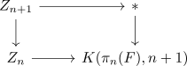

obstruction class of a simple fibration
Proposition
Let $f: X \rightarrow Y$ be a simple serre fibration between pathconnected topological spaces Assume that the fundamental group $\pi_1$ is surjective
Then for each $n \geq 1$ the \(n\)-th obstruction class, if it exists, is defined inductively
